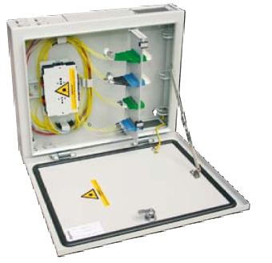

Optitel wall-mounted Fibre Optic Distribution Box
- Mounted directly on the room’s wall, where the line cable is terminated.
- Number of adapter ports: 24 or 48
- Available panel for all types of adapters (E2000, SC or another, according to customer’s request).
- Possibility of many cables terminating.
- Equipped with 2 or 4 splice cassettes.
- Top and bottom cable entry.
- The rest of fibre loose tube storage in housing.
- Tube guiding units ensure that the minimum bend radius of pigtails is not exceeded.
- The case can be locked using lock, possibility of opening of the door upward and downward.
- It is possible to dismantle the housing for better access to splice cassettes.
- The distributor is equipped with delimitation lever so that the opened door can be used as montage table (when open downwards).